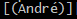
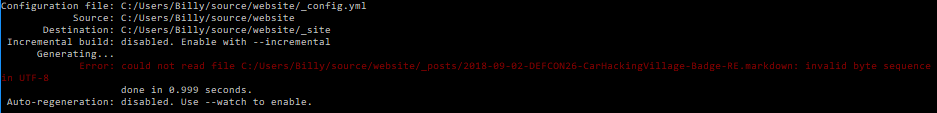

[1:50am]: Great, first thing's first. Install [Ruby+Devkit] so I can actually compile all the Jekyll shit so the post actually shows up on the main page.
Go ahead, you can play along.
[1:54am]: While downloading Ruby, I checked out the license in the badge's SDK from the manufacturer's website. You can read it here. Any lawyer out there who can decode if this is a good thing or bad thing.. seems very restrictive to my untrained eyes.
[2:00am]: Wife came to tell me to get to bed. Better get to bed! But first, I'm installing Jekyll finally after following these easy instructions. Cool.
[9:00am]: Well, now I know why I never write blogs. This is supposed to be on the CHV badge, but I haven't even successfully created a new post yet. I forgot to mention that "jekyll build" puked on "é" when I ran it last night.
 < -- It doesn't like the fancy-ass 'e'

After a quick fix (set 'fancy-ass e' to 'e') the "jekyll build" was satisfied, but my post still isn't showing up on my site after pushing the gh-pages branch. I wonder if I didn't create a necessary link somwhere....
[10:14am]: Okay, I watched some Youtubez and poked around some docs. While I was at it, I renewed my domain with my DNS provider and configured HTTPS. It was easy, and I think the folks over at Let's Encrypt!have something to do with it. Huge shout out!!! w00t w00t!!
Back to the Jekyll issue... I am thinking it's a build problem so I need to build it locally with something like "bundle exec jekyll serve".
[12:39pm]: Time flies when you're having fun! /sarcasm. Okay so maybe I learned a few things, but I haven't gotten very far on my actual goal of reverse engineering this badge. I have figured out how this Jekyll shit works. Things mostly were broken just becuase they were old. I used jekyll to create a new test website from scratch. Then I brought in the post I am working on to see if it would render there, and voila! It did. So I copied over the newer Jekyll files like _config.yml and index.md. Then reorganized things. Messed with the 404.html (Check it out!: 404 ERROR!), committed my paperclips and gum website, and pushed it up to gh-pages.

[9:47pm]:The hack to fix CAN on the CHV badge is two parts: (1) Hardware and (2) Software. So I did some solder work since my last post:
1. Ground PIN 2 on all of the CAN Transceivers (NXP TJA1057). So that means three pretty small solder joints. Make sure you have a small tip! I used a 1/32" pitch cone tip. Just take your time, get solder on the tip and solder on the patch wire. I think enamled copper wire is meant for this kind of stuff, but jumper wires actually work just fine in most cases, so I went with that.
2. Solder a 5-pin male header to the S32K JTAG port. I've had to do this type of solder joint tens of times while building my fpv quadcopters, it's a very common solder joint... This one will benefit from flux because it will help the solder flow down into the cylindrical hole of the PCB. Put a little on the tips of the header before you push it in. Use any random thing to prop the pins up so you can solder them in place. I kinda F*@keD up because I didn't use any and got some fat solder joints.
It's not pretty, but it should get the job done.
Time to get BusPirate configured. I have a Bus Pirate 4.0 and will be following the link I referenced above.
[10:30pm]: Oh boy! According to the BusPirate website, Bus Pirate v4.0 hardware does not support OpenOCD JTAG.... :(((((
But have no fear! Bus Pirate Community Firmware 7.0 to the rescue?? Could it be?!
I noticed the blog was posted back in 2016 (2 years ago) so I took a look at the bleeding edge in github.
[insert knife picturehere]
It looks like there's a recent issue on Github about not getting BP V4.0 and OpenOCD to work.
Oh yeah, they whipped out the logic analyzer. They aren't messing around! This is what I like to see.
[insert image of github post]
AND FIXED IT!!!!
[insert celebration gif]
[insert github fux]
WOOOO!!! Time to pull it down and give it a spin! There is a guide here.
git clone https://github.com/BusPirate/Bus_Pirate.git
wget http://www.microchip.com/mplabxc16linux
chmod +x xc16-v1.35-full-install-linux-installer.run
sudo ./xc16-v1.35-full-install-linux-installer.run
[insert image of compiler install steps]
[11:20pm]: Time to get the IDE going...
wget http://www.microchip.com/mplabx-ide-linux-installer
tar -xvf MPLABX-v5.05-linux-installer.tar (this one takes a while, just let it work)
chmod +x MPLABX-v5.05-linux-installer.sh
sudo ./MPLABX-v5.05-linux-installer.sh
64 Bit, check libraries
Check for 32 Bit libraries
These 32 bit libraries were not found and are needed for MPLAB X to run:
libexpat.so
libX11.so
libXext.so
For more information visit http://microchip.wikidot.com/install:mplabx-lin64
[insert failed install image]
NOTE: You may need different libraries than what I list below. Follow the Microchip guide here for installing the IDE in linux.
sudo apt-get install libexpat1:i386 libx11-6:i386 libxext6:i386
[11:36pm]: Finally I ran the IDE installer and it is actively installing...
[insert image of installing #4]
[11:41pm]: Argghh!! VM ran out of storage!!!!! It had a 32 GB drive..
[insert image of failed install]
Most of the install is located at /opt/microchip as far as I can tell by using "Disk Usage Analyzer." Just select it from the GUI's search option. So I removed the installed bits so my computer had a chance to breathe. I couldn't save this file or do much of anything without warnings and complaints that there was no disk space to do anything (e.g. tab-complete in Bash didn't work - probably because it needed to create a file-based cache and couldn't).
sudo rm -r /opt/microchip